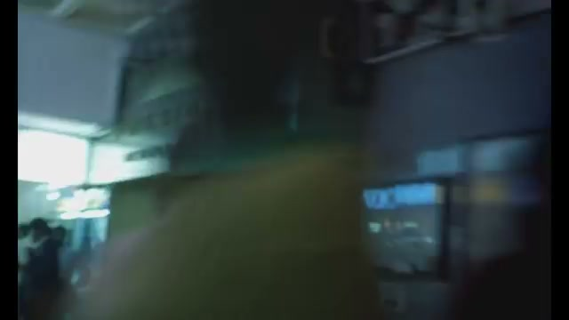
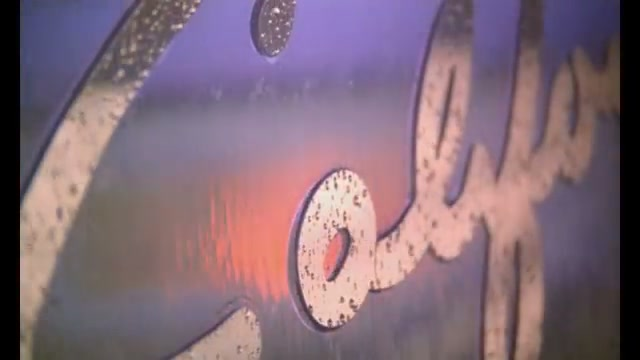
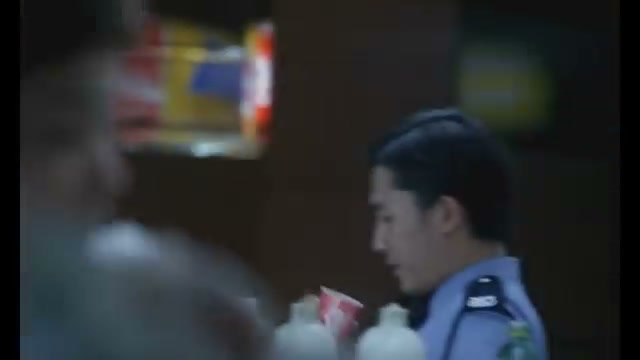
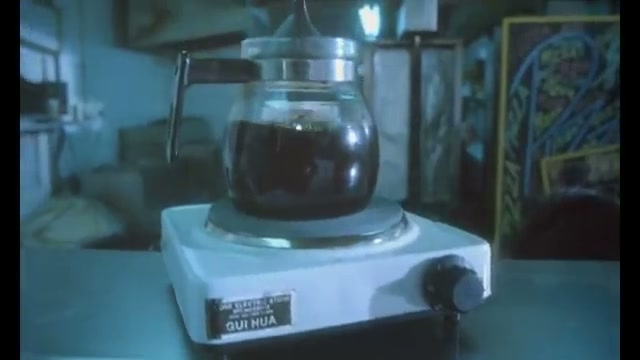
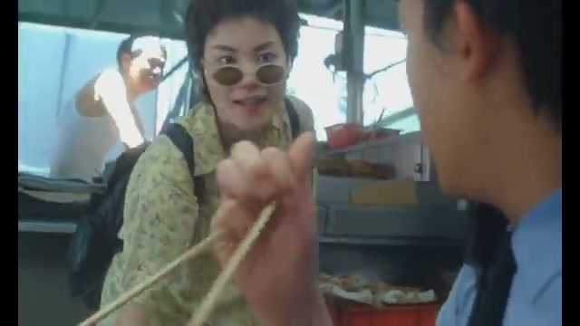
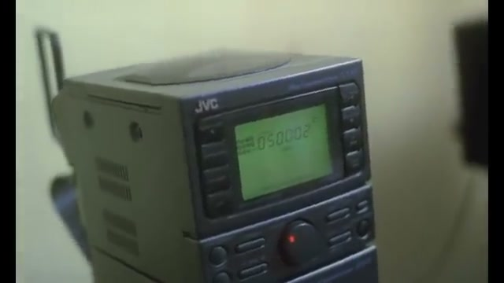
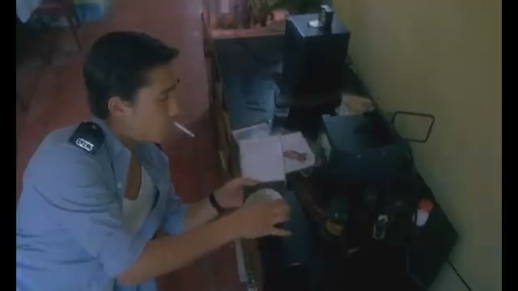
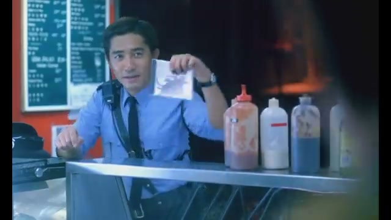
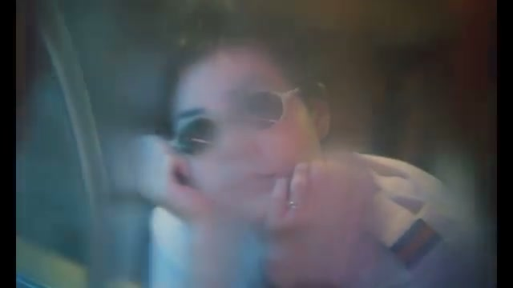

채널: 주란주란 | 길이: 4:20 | 날짜: 2018년 4월 11일

영상은 블러 처리된 실내 공간으로 시작된다. 화면은 매우 어둡고 흔들리며, 형광등의 강한 흰빛이 왼쪽에서 과노출 상태로 침범해 들어온다. 화면 중앙에는 올리브 황색의 재킷 혹은 상의를 입은 인물의 뒷모습이 화면을 가득 채우다시피 클로즈업되어 있어, 관객은 인물의 정체를 즉시 파악할 수 없다.
오른편 배경에는 파란 조명이 켜진 쇼윈도 혹은 전광판이 희미하게 보이며, 왼쪽 원경에는 여러 사람들이 움직이는 모습이 흐릿하게 식별된다. 이 장면은 중경대하(重慶大廈) 혹은 주변 홍콩 번화가의 일상적 혼잡함을 담고 있으며, 왕가위 감독 특유의 핸드헬드 촬영 기법이 극도로 두드러진다. 카메라의 불안정한 흔들림은 도시 속 개인의 고독과 방향 상실을 시각적으로 은유한다.

세그먼트 2에서는 금속 혹은 콘크리트 재질의 오래된 간판이 극도로 클로즈업되어 등장한다. 간판의 문자는 영문 필기체(cursive) 스타일로 조각되어 있으며, 표면은 세월의 흔적으로 인해 부식되고 얼룩진 텍스처를 지닌다. 배경은 보라색과 오렌지색이 혼합된 황혼 혹은 인공 조명의 그라데이션으로 구성되어 있으며, 이는 영화 전반에 흐르는 노스탤지어와 시간의 흐름에 대한 감각을 강화한다.
이 간판은 영화에서 페이(왕페이 분)가 일하는 분식점 "Midnight Express"의 간판으로 추정된다. 미드나잇 익스프레스는 영화 2부의 주요 배경으로, 663 경찰과 페이가 처음 만나고 서로를 알아가는 공간이다. 간판의 낡고 빛바랜 질감은 홍콩이라는 도시 공간이 지닌 역사적 퇴적감을 상징하며, 동시에 그 속에서 꽃피는 젊은이들의 감정을 아이러니하게 대비시킨다.

세그먼트 3에서는 청색 경찰 제복을 입은 남성이 카운터 앞에 서 있는 모습이 포착된다. 남성은 손에 종이컵 혹은 음료를 들고 있으며, 시선은 약간 아래쪽을 향해 있다. 배경에는 노란색, 파란색, 빨간색/오렌지색의 선명한 홍콩식 상업 포스터나 메뉴판이 걸려 있어, 좁고 활기찬 분식점의 분위기를 형성한다.
이 인물은 양조위(梁朝偉)가 연기한 663번 경찰(본명 He Qiwu)로, 영화 2부의 남자 주인공이다. 그는 미드나잇 익스프레스 분식점을 매일 방문하며 페이와 조금씩 가까워진다. 경찰복이라는 제복은 그가 사회적 질서와 의무에 묶여 있는 인물임을 상징하는 동시에, 페이의 자유분방함과 극명한 대조를 이룬다.

세그먼트 4는 영상 전체에서 가장 정적이고 명상적인 장면이다. 투명한 유리 커피포트(퍼콜레이터)가 "QUI HUA(桂花)" 브랜드로 추정되는 소형 전기 핫플레이트 위에 놓여 있다. 포트 안에는 진한 갈색의 커피가 가득 차 있으며, 증기가 올라오는 듯 보인다. 배경은 어두운 테이블과 그 너머로 흐릿하게 보이는 생활용품들로 구성되어 있다.
이 커피포트 장면은 663 경찰이 혼자 집에서 시간을 보내는 장면 혹은 영화 내 일상적 고독을 표현하는 인서트 컷으로 기능한다. 왕가위 감독은 이처럼 인물 없이 사물만을 찍은 컷을 자주 활용하여, 대사 없이도 인물의 내면 상태(기다림, 외로움, 반복되는 일상)를 전달한다. 커피가 끓으며 천천히 시간이 흐르는 이 이미지는 「몽중인」의 몽환적인 멜로디와 완벽하게 어우러진다.

세그먼트 5는 영상의 감정적 클라이맥스 중 하나로, 왕페이가 연기한 페이(Faye)가 정면으로 클로즈업된다. 그녀는 타원형의 작은 틴티드(tinted) 선글라스를 착용하고 있으며, 꽃무늬가 가득한 연녹색/노란색 계열의 원피스나 상의를 입고 있다. 등에는 배낭을 메고 있으며, 손에는 젓가락을 들고 무언가를 먹거나 장난스럽게 활용하고 있다. 표정은 명랑하고 장난기 넘치며, 오른편에는 청색 제복의 남성(663)이 뒷모습이나 옆모습으로 부분적으로 포착된다.
이 장면은 두 인물이 미드나잇 익스프레스 카운터 앞에서 대화하는 전형적인 장면 중 하나이다. 페이의 선글라스, 꽃무늬 의상, 장난스러운 몸짓은 그녀가 지닌 자유롭고 경계를 초월하는 성격을 직관적으로 드러낸다. 그녀는 영화 내에서 캘리포니아를 꿈꾸는 인물로, 현실에 안주하지 않고 언제나 다른 어딘가를 향해 있는 존재다. 반면 663은 그런 그녀에게 서서히 끌리면서도 자신의 일상과 과거 관계에서 벗어나지 못하는 모습을 보인다.

세그먼트 6에서는 JVC 브랜드의 구형 올인원 오디오 시스템이 등장한다. 기기는 회색/검정 계열의 플라스틱 케이스에 싸여 있으며, 중앙 디스플레이 패널에는 초록빛 LCD 화면이 켜져 있고 "050002" 혹은 유사한 숫자/문자가 표시되어 있다. 기기 하단에는 CD 플레이어 또는 카세트 덱으로 보이는 구획이 있으며, 빨간 버튼이 눈에 띈다. 기기 위에는 안테나가 세워져 있고, 배경은 어두운 실내이다.
이 스테레오는 영화에서 매우 중요한 소품이다. 페이는 663의 집에 몰래 드나들며 이 스테레오로 "California Dreamin'"(The Mamas & The Papas, 1965)을 반복해서 최대 볼륨으로 틀어놓는다. 이 행위는 페이가 663에게 보내는 무언의 메시지이자, 자신의 꿈(캘리포니아 이민)을 그에게 주입하려는 시도로 해석된다. 「몽중인」 역시 비슷한 맥락에서 음악이 꿈과 탈출을 향한 욕망을 담는 그릇임을 보여준다.

세그먼트 7에서는 청색 제복의 남성이 책상 앞에 앉아 담배를 피우는 장면이 포착된다. 책상 위에는 서류나 종이가 놓여 있으며, 배경에는 검은색 오디오 장비(아마도 동일한 JVC 스테레오 혹은 유사 기기)와 여러 생활용품이 흐릿하게 보인다. 벽은 노란색과 빨간색 계열로 칠해져 있어 협소하지만 색채가 풍부한 홍콩식 주거 공간임을 알 수 있다.
이 장면은 663이 자신의 아파트에서 홀로 시간을 보내는 모습이다. 담배 연기와 함께 멍하니 앉아 있는 그의 모습은 이별 후의 허탈함과 일상의 반복에 갇힌 인물의 심리를 잘 표현한다. 왕가위 감독은 이처럼 인물이 단순히 앉아있거나 걷거나 담배를 피우는 장면을 길게 담음으로써, 내면의 감정을 행동보다 분위기로 전달하는 독특한 연출 방식을 구사한다.

세그먼트 8은 영상 전체에서 서사적으로 가장 직접적인 장면이다. 청색 제복과 검은 넥타이, 어깨걸이 가방을 착용한 남성(663)이 미드나잇 익스프레스 카운터 앞에 서 있다. 그는 손에 작은 종이 혹은 사진 한 장을 들고 화면 쪽(혹은 상대방)을 향해 보여주고 있다. 배경에는 흰색 배경의 메뉴판(영문과 한자 병기로 추정)과 빨간색, 흰색, 갈색 계열의 소스병들이 가지런히 놓여 있어, 홍콩식 소형 분식점의 카운터 풍경을 구체적으로 재현한다.
이 장면은 663이 페이에게 혹은 분식점의 다른 누군가에게 어떤 정보를 전달하거나, 사진이나 메모를 보여주는 서사적 맥락에서 등장한 것으로 보인다. 영화 속에서 663은 실종된 전 연인이나 주변 인물에 관한 단서를 추적하거나, 페이와 소통하는 과정에서 여러 물건과 메모를 교환한다. 뒤편 조명의 붉은 빛과 따뜻한 색채는 이 공간이 단순한 식당이 아니라 두 인물의 감정이 교차하는 친밀한 장소임을 암시한다.

마지막 세그먼트 9에서는 선글라스를 착용한 여성의 얼굴이 소프트 포커스(soft focus)로 극도로 클로즈업된다. 이미지는 유리창이나 물방울 혹은 카메라 필터를 통해 촬영한 듯 전체적으로 흐릿하고 몽환적인 텍스처를 지닌다. 여성은 작은 타원형 선글라스를 쓰고 있으며, 입가에는 미세한 미소를 머금고 있다. 전반적으로 보라색과 황갈색이 혼합된 따뜻하고 몽환적인 색조가 화면을 지배한다.
이 클로징 장면은 페이라는 인물의 본질 - 꿈꾸는 자, 자유로운 영혼, 현실에 완전히 착지하지 않는 존재 - 을 가장 압축적으로 표현한다. 소프트 포커스와 따뜻한 색조는 그녀가 이미 어느 정도 기억과 꿈의 영역에 존재하는 인물임을 시사하며, 곡 「몽중인(夢中人)」의 제목 그대로 "꿈속의 사람"이라는 의미를 시각적으로 완성시킨다. 곡이 페이드 아웃되는 시점에 이 이미지가 등장함으로써, 영상은 음악과 영화가 공유하는 하나의 정서적 결론에 도달한다.
"Валерий Сюткин" — 모든 세그먼트에 걸쳐 반복 표시된 자막 텍스트. 러시아어 이름으로, 소스 영상의 워터마크 또는 업로더 표기로 추정되며 영화/곡의 내용과 무관하다.
「몽중인(夢中人)」 원제의 의미 — 중국어로 "꿈속의 사람"을 뜻하며, The Cranberries의 "Dreams"를 광둥어로 번안한 곡이다. 왕페이가 이 곡을 영화 속 자신의 캐릭터와 일치하는 방식으로 소화했다는 점에서, 곡과 캐릭터는 사실상 하나의 존재처럼 기능한다.
JVC 스테레오 디스플레이 "050002" — 화면에 표시된 숫자는 트랙 번호 혹은 재생 시간을 나타낼 가능성이 높다. 영화에서 페이가 반복 재생하는 음악의 루프(loop)적 속성, 즉 같은 꿈을 반복해서 꾸는 것과 같은 행위를 상징하는 디테일로 읽힐 수 있다.
이 영상은 단순히 「몽중인」이라는 곡을 감상하는 뮤직비디오를 넘어, 왕가위 감독의 《중경삼림》이라는 영화 전체의 정서적 지도를 4분 20초 안에 압축해 보여준다.
핵심 메시지는 세 가지로 요약된다.
첫째, 음악과 영상의 완벽한 조화다. 왕페이의 목소리가 지닌 몽환성과 「몽중인」의 드림팝적 사운드스케이프는 왕가위 감독의 촬영 미학(핸드헬드, 블러, 슬로모션, 과노출)과 동일한 언어로 말한다. 음악을 들으며 영상을 보면, 두 예술 형식이 서로를 해석하고 완성시키고 있음을 느끼게 된다.
둘째, 자유와 구속의 대립이라는 보편적 주제다. 경찰복을 입은 663과 선글라스를 쓴 페이의 반복적인 교차는, 사회적 규범에 묶인 존재와 그것을 초월하려는 존재 사이의 끌림과 거리를 형상화한다. 이는 단순한 로맨스를 넘어 삶의 방식에 대한 철학적 질문을 내포한다.
셋째, 홍콩이라는 공간의 특수성이다. 1994년이라는 홍콩 반환 직전의 시대적 맥락 속에서, 이 영화와 음악은 곧 사라질지도 모르는 어떤 것들 - 자유, 개인성, 특정한 삶의 방식 - 에 대한 애도이자 찬가로 기능한다. 페이가 꿈꾸는 캘리포니아는 단순한 지명이 아니라 "지금 여기가 아닌 어딘가"에 대한 보편적 동경의 메타포이다.
이 영상은 《중경삼림》을 처음 접하는 관객에게는 입문의 문으로, 이미 영화를 본 관객에게는 감정의 재소환 장치로 작동한다. 30년이 지난 지금도 이 곡과 영상이 전 세계적으로 지속적으로 소비되고 있다는 사실은, 왕가위와 왕페이가 만들어낸 이 특별한 협업이 단순한 시대의 산물이 아닌 시간을 초월한 예술적 성취임을 증명한다.
댓글
GitHub 이슈 기반 댓글 시스템입니다.